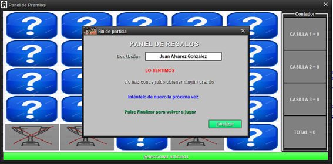

En caso de que no consigamos ningún punto en el panel de casillas, la aplicación
nos mandará directos a la pantalla final, y nos pondrá el mensaje de que hemos acabado
la partida y no hemos conseguido ningún punto. Si seleccionamos Finalizar se iniciará de
nuevo la aplicación y se redistribuirán las casillas de nuevo.
